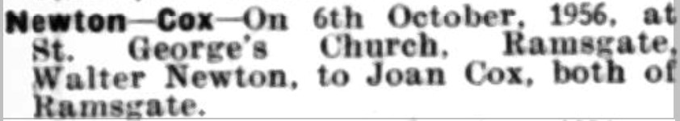
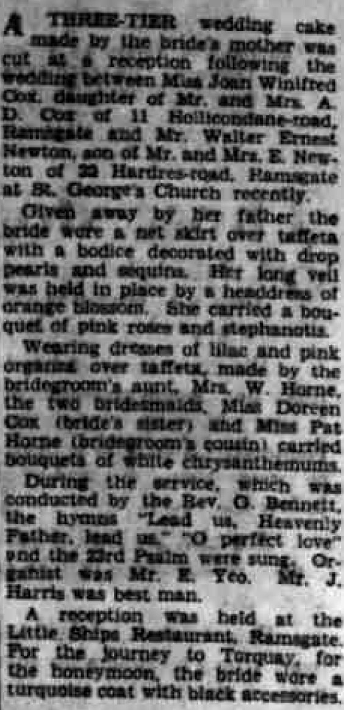
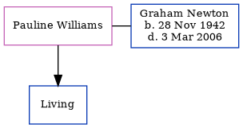

Walter Ernest Newton cFeb 1931 - 2016
[ Home ] | [ Calendar ] | [ Surnames Index ] | [ Census Index ] | [ Family History ]The child of Ernest Newton (a window cleaner) and Pleasant Horn, Walter Newton, the third cousin once-removed on the father's side of Nigel Horne, was born in Thanet, Kent, England c. Feb 19311 and married Joan Cox (with whom he had 1 child, Jeffrey W) at St George's Church, Church Hill, Ramsgate, Kent, England on Oct 6, 19562.
During his life, he was living at 22 Hardres Road in Ramsgate on Sep 29, 1939 and in 1956; and at 88 Crescent Road in Ramsgate in 2003.
He died on Apr 9, 2016.
Parents
- Ernest Thomas was born on Apr 29, 1898
- Pleasant Emily was born on Mar 1, 1903
Children
- Jeffrey W was born c. Nov 1958
Citations
- England & Wales births 1837-2006 - Findmypast
- England & Wales Marriages 1837-2005 - Findmypast
Media
East Kent Times and Mail - 10 Oct 1956

East Kent Times and Mail - 19 Oct 1956

England & Wales births 1837-2006 - BMD/B/1931/1/AZ/000855/150
England & Wales marriages 1837-2005 - BMD/M/1956/4/AZ/000814/088
Family Tree
Generated by ged2site. Last updated on Jun 11, 2024